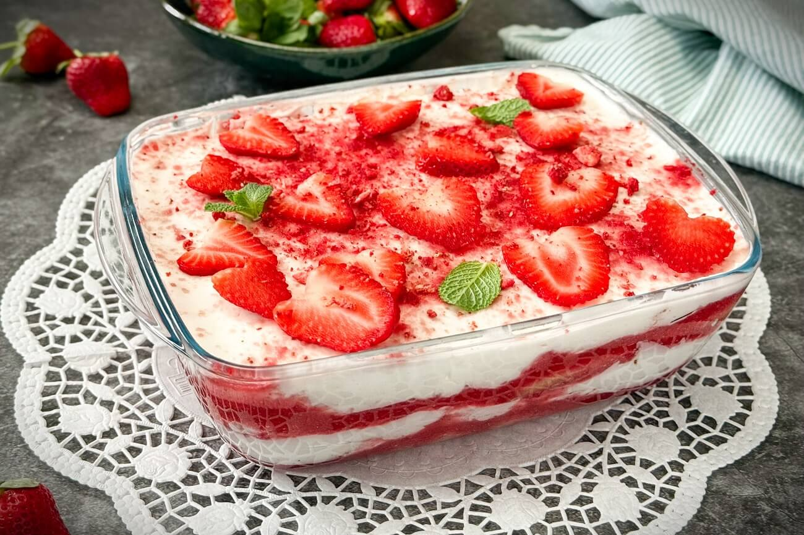

Erdbeer-Tiramisu Rezept:

Lecker Erdbeer-Tiramisu!
Selbstgemacht schmeckt es doch am besten!
| Zubereitungsdauer: |
20min. |
| Zeit zum Ruhen: |
3h |
| Gesamtzeit: |
3h 20min. |
Zutatenliste:
- 500g Erdbeeren
- 75mL roter Rum
- 300g Biskotten
- 500g Mascarpone
- 250g Mager-Topfen
- 250g Schlagoers
- 100g brauner Zucker
- 1 Packung Vanillezucker
- 1 Packung Sahnesteif
Benötigte Küchenutensilien:
- Auflaufform
- 2x Rührschüssel (1x groß & 1x klein)
- Mixer
- Schneidebrett
- Messer
Zubereitung:
- Die Erdbeeren waschen, das grüne Blattwerk entfernen & die Erdbeeren in dünne Scheiben schneiden.
- Die Mascarpone, den Topfen, den Zucker & den Vanillezucker in der großen Rührschüssel vermengen.
- Danach den Schlagobers mit dem Sahnesteif in einer kleinen Rührschüssel steif schlagen & die Mische dann in der großen Rührschüssel unterheben, bis eine schöne cremige Masse entsteht.
- Die Biskotten kurz komplett in den Rum eintauchen.
- Dann 1 Reihe getränkter Biskotten in der Auflaufform auslegen, darauf eine Schicht Creme streichen & auf die Creme-Schicht die geschnittenen Erdbeeren legen.
- Hierauf wieder eine Reihe getränkter Biskotten, 1 Schicht Creme & Erdbeeren. Wiederholen Sie diesen Vorgang so lange bis Sie oben an der Form angelangt sind, dabei sollten die Erdbeeren die letzte Schicht sein.
- Wenn Sie damit fertig sind, stellen Sie das Erdbeer-Tiramisu für 3h in den Kühlschrank damit es fest wird & Ruhen kann.
- Wenn die Zeit reif ist, kann das Erdbeer-Tiramisu genossen werden.
Das Erdbeer-Tiramisu hält mindestens 2 Tage, wenn man es im Kühlschrank aufbewahrt.